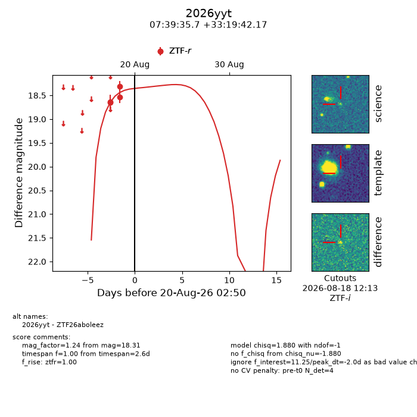
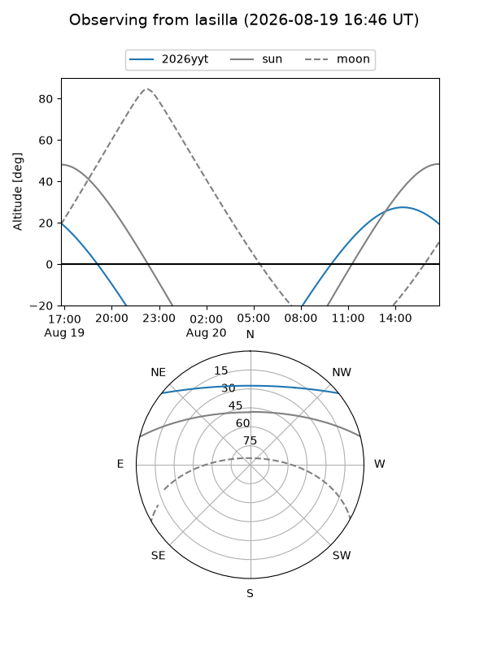
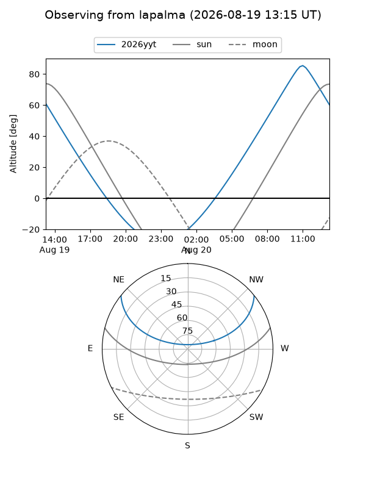
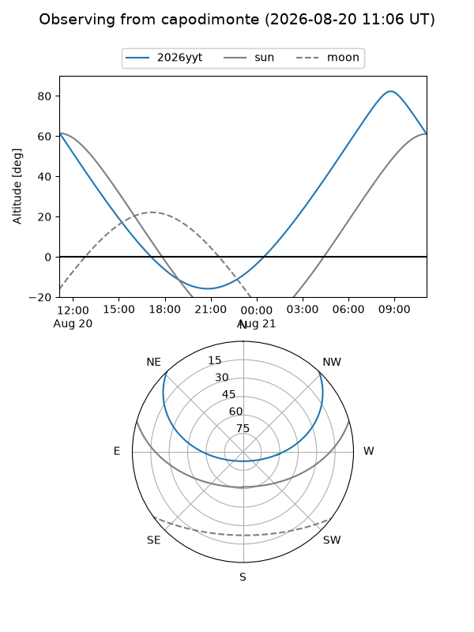
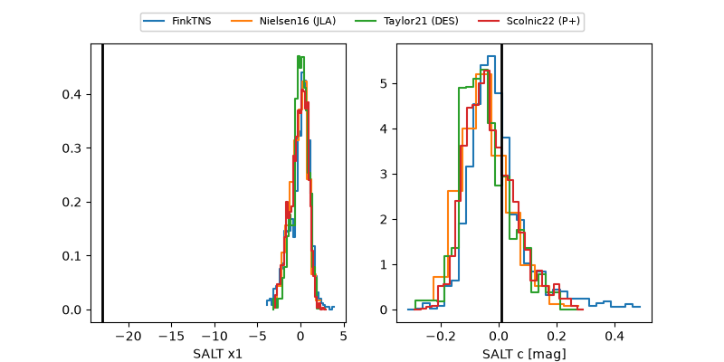

2026yyt
Target 2026yyt at 2026-08-20 14:50
Aliases and brokers:
FINK-ZTF: ztf.fink-portal.org/ZTF26aboleez
Lasair-ZTF: lasair-ztf.lsst.ac.uk/objects/ZTF26aboleez
ALeRCE-ZTF: alerce.online/object/ZTF26aboleez
YSE-PZ: ziggy.ucolick.org/yse/transient_detail/2026yyt
TNS name: wis-tns.org/object/2026yyt
Direct TNS query: direct search
alt names
ZTF26aboleez (ztf,fink_ztf)
2026yyt (tns,yse)
Coordinates:
equatorial (ra, dec) = 114.8988,+33.32838
equatorial (HMS+DMS) = 07:39:35.71,+33:19:42.17
galactic (l, b) = (186.3139,+23.93124)
Flags:
TNS type: nan
peak dt: -1.5
Photometry:
last ztfr=18.31
4 ztfr detections
Lightcurve

Visibility



Additional plots
